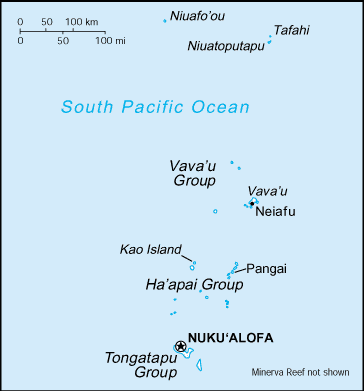
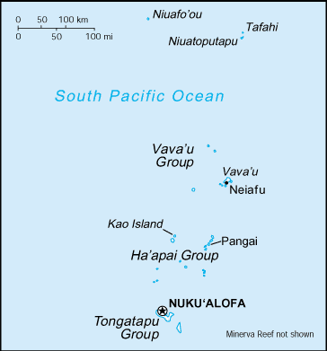

-
Introduction :: Tonga
-
Background:Tonga - unique among Pacific nations - never completely lost its indigenous governance. The archipelagos of "The Friendly Islands" were united into a Polynesian kingdom in 1845. Tonga became a constitutional monarchy in 1875 and a British protectorate in 1900; it withdrew from the protectorate and joined the Commonwealth of Nations in 1970. Tonga remains the only monarchy in the Pacific; in 2008, King George TUPOU V announced he was relinquishing most of his powers leading up to parliamentary elections in 2010. TUPOU died in 2012 and was succeeded by his brother 'Aho'eitu TUPOU VI. Tropical Cyclone Gita, the strongest-ever recorded storm to impact Tonga, hit the islands in February 2018 causing extensive damage.
-
Geography :: Tonga
-
Location:Oceania, archipelago in the South Pacific Ocean, about two-thirds of the way from Hawaii to New ZealandGeographic coordinates:20 00 S, 175 00 WMap references:OceaniaArea:total: 747 sq kmland: 717 sq kmwater: 30 sq kmcountry comparison to the world: 190Area - comparative:four times the size of Washington, DCLand boundaries:0 kmCoastline:419 kmMaritime claims:territorial sea: 12 nmexclusive economic zone: 200 nmcontinental shelf: 200-m depth or to the depth of exploitationClimate:tropical; modified by trade winds; warm season (December to May), cool season (May to December)Terrain:mostly flat islands with limestone bedrock formed from uplifted coral formation; others have limestone overlying volcanic rockElevation:0 m lowest point: Pacific Ocean1046 highest point: Kao Volcano on Kao IslandNatural resources:arable land, fishLand use:agricultural land: 43.1% (2011 est.)arable land: 22.2% (2011 est.) / permanent crops: 15.3% (2011 est.) / permanent pasture: 5.6% (2011 est.)forest: 12.5% (2011 est.)other: 44.4% (2011 est.)Irrigated land:0 sq km (2012)Population distribution:over two-thirds of the population lives on the island of Tongatapu; only 45 of the nation's 171 islands are occupiedNatural hazards:
cyclones (October to April); earthquakes and volcanic activity on Fonuafo'ou
volcanism: moderate volcanic activity; Fonualei (180 m) has shown frequent activity in recent years, while Niuafo'ou (260 m), which last erupted in 1985, has forced evacuations; other historically active volcanoes include Late and Tofua
Environment - current issues:deforestation from land being cleared for agriculture and settlement; soil exhaustion; water pollution due to salinization, sewage, and toxic chemicals from farming activities; coral reefs and marine populations threatenedEnvironment - international agreements:party to: Biodiversity, Climate Change, Climate Change-Kyoto Protocol, Desertification, Hazardous Wastes, Law of the Sea, Marine Dumping, Marine Life Conservation, Ozone Layer Protection, Ship Pollutionsigned, but not ratified: none of the selected agreementsGeography - note:the western islands (making up the Tongan Volcanic Arch) are all of volcanic origin; the eastern islands are nonvolcanic and are composed of coral limestone and sand -
People and Society :: Tonga
-
Population:106,398 (July 2018 est.)country comparison to the world: 193Nationality:noun: Tongan(s)adjective: TonganEthnic groups:Tongan 97%, part-Tongan 0.8%, other 2.2%, unspecified (2016 est.)Languages:Tongan and English 76.8%, Tongan, English, and other language 10.6%, Tongan only (official) 8.7%, English only (official) 0.7%, other 1.7%, none 2.2% (2016 est.)
note: data represent persons aged 5 and older who can read and write a simple sentence in Tongan, English, or another language
Religions:Protestant 64.1% (includes Free Wesleyan Church 35%, Free Church of Tonga 11.9%, Church of Tonga 6.8%, Assembly of God 2.3%, Seventh Day Adventist 2.2%, Tokaikolo Christian Church 1.6%, other 4.3%), Mormon 18.6%, Roman Catholic 14.2%, other 2.4%, none 0.5%, unspecified 0.1% (2016 est.)Age structure:0-14 years: 33.26% (male 17,979 /female 17,404)15-24 years: 19.69% (male 10,725 /female 10,223)25-54 years: 34.69% (male 18,436 /female 18,469)55-64 years: 5.81% (male 3,098 /female 3,089)65 years and over: 6.56% (male 3,140 /female 3,835) (2018 est.)population pyramid: The World Factbook Field Image ModalAustralia - Oceania :: Tonga Print
The World Factbook Field Image ModalAustralia - Oceania :: Tonga Print Image DescriptionThis is the population pyramid for Tonga. A population pyramid illustrates the age and sex structure of a country's population and may provide insights about political and social stability, as well as economic development. The population is distributed along the horizontal axis, with males shown on the left and females on the right. The male and female populations are broken down into 5-year age groups represented as horizontal bars along the vertical axis, with the youngest age groups at the bottom and the oldest at the top. The shape of the population pyramid gradually evolves over time based on fertility, mortality, and international migration trends.
Image DescriptionThis is the population pyramid for Tonga. A population pyramid illustrates the age and sex structure of a country's population and may provide insights about political and social stability, as well as economic development. The population is distributed along the horizontal axis, with males shown on the left and females on the right. The male and female populations are broken down into 5-year age groups represented as horizontal bars along the vertical axis, with the youngest age groups at the bottom and the oldest at the top. The shape of the population pyramid gradually evolves over time based on fertility, mortality, and international migration trends.
For additional information, please see the entry for Population pyramid on the Definitions and Notes page under the References tab.Dependency ratios:total dependency ratio: 74.2 (2015 est.)youth dependency ratio: 63.9 (2015 est.)elderly dependency ratio: 10.2 (2015 est.)potential support ratio: 9.8 (2015 est.)Median age:total: 23.3 yearsmale: 22.9 yearsfemale: 23.8 years (2018 est.)country comparison to the world: 174Population growth rate:-0.1% (2018 est.)country comparison to the world: 204Birth rate:21.8 births/1,000 population (2018 est.)country comparison to the world: 69Death rate:4.9 deaths/1,000 population (2018 est.)country comparison to the world: 199Net migration rate:-17.8 migrant(s)/1,000 population (2017 est.)country comparison to the world: 218Population distribution:over two-thirds of the population lives on the island of Tongatapu; only 45 of the nation's 171 islands are occupiedUrbanization:urban population: 23.1% of total population (2018)rate of urbanization: 0.71% annual rate of change (2015-20 est.)Major urban areas - population:23,000 NUKU'ALOFA (2018)Sex ratio:at birth: 1.03 male(s)/female (2017 est.)0-14 years: 1.03 male(s)/female (2017 est.)15-24 years: 1.05 male(s)/female (2017 est.)25-54 years: 1 male(s)/female (2017 est.)55-64 years: 0.98 male(s)/female (2017 est.)65 years and over: 0.84 male(s)/female (2017 est.)total population: 1.01 male(s)/female (2017 est.)Mother's mean age at first birth:24.9 years (2012 est.)note: median age at first birth among women 25-49
Maternal mortality rate:124 deaths/100,000 live births (2015 est.)country comparison to the world: 68Infant mortality rate:total: 10.9 deaths/1,000 live births (2018 est.)male: 11.3 deaths/1,000 live births (2018 est.)female: 10.5 deaths/1,000 live births (2018 est.)country comparison to the world: 127Life expectancy at birth:total population: 76.6 years (2018 est.)male: 75 years (2018 est.)female: 78.3 years (2018 est.)country comparison to the world: 85Total fertility rate:3.03 children born/woman (2018 est.)country comparison to the world: 51Contraceptive prevalence rate:34.1% (2012)Health expenditures:5.2% of GDP (2014)country comparison to the world: 136Physicians density:0.56 physicians/1,000 population (2010)Hospital bed density:2.6 beds/1,000 population (2010)Drinking water source:improved: urban: 99.7% of populationrural: 99.6% of populationtotal: 99.6% of populationunimproved: urban: 0.3% of populationrural: 0.4% of populationtotal: 0.4% of population (2015 est.)Sanitation facility access:improved: urban: 97.6% of population (2015 est.)rural: 89% of population (2015 est.)total: 91% of population (2015 est.)unimproved: urban: 2.4% of population (2015 est.)rural: 11% of population (2015 est.)total: 9% of population (2015 est.)HIV/AIDS - adult prevalence rate:NAHIV/AIDS - people living with HIV/AIDS:NAHIV/AIDS - deaths:NAMajor infectious diseases:note: active local transmission of Zika virus by Aedes species mosquitoes has been identified in this country (as of August 2016); it poses an important risk (a large number of cases possible) among US citizens if bitten by an infective mosquito; other less common ways to get Zika are through sex, via blood transfusion, or during pregnancy, in which the pregnant woman passes Zika virus to her fetus
Obesity - adult prevalence rate:48.2% (2016)country comparison to the world: 7Children under the age of 5 years underweight:1.9% (2012)country comparison to the world: 112Literacy:definition: can read and write Tongan and/or English (2015 est.)total population: 99.4% (2015 est.)male: 99.3% (2015 est.)female: 99.4% (2015 est.) -
Government :: Tonga
-
Country name:conventional long form: Kingdom of Tongaconventional short form: Tongalocal long form: Pule'anga Fakatu'i 'o Tongalocal short form: Tongaformer: Friendly Islandsetymology: "tonga" means "south" in the Tongan language and refers to the country's geographic position in relation to central PolynesiaGovernment type:constitutional monarchyCapital:name: Nuku'alofageographic coordinates: 21 08 S, 175 12 Wtime difference: UTC+13 (18 hours ahead of Washington, DC, during Standard Time)daylight saving time: +1hr, begins first Sunday in November; ends second Sunday in JanuaryAdministrative divisions:5 island divisions; 'Eua, Ha'apai, Ongo Niua, Tongatapu, Vava'uIndependence:4 June 1970 (from UK protectorate)National holiday:Official Birthday of King TUPOU VI, 4 July (1959); note - actual birthday of the monarch is 12 July 1959; 4 July (2015) is the day the king was crownedConstitution Day (National Day), 4 November (1875)Constitution:history: adopted 4 November 1875 (2018)amendments: proposed by the Legislative Assembly; passage requires approval by the Assembly in each of three readings, the unanimous approval of the Privy Council (a high-level advisory body to the monarch), the Cabinet, and assent to by the monarch; revised 1988; amended many times, last in 2016 (2018)Legal system:English common lawInternational law organization participation:has not submitted an ICJ jurisdiction declaration; non-party state to the ICCtCitizenship:citizenship by birth: nocitizenship by descent only: the father must be a citizen of Tonga; if a child is born out of wedlock, the mother must be a citizen of Tongadual citizenship recognized: yesresidency requirement for naturalization: 5 yearsSuffrage:21 years of age; universalJudicial branch:highest courts: Court of Appeal (consists of the court president and a number of judges determined by the monarch); note - appeals beyond the Court of Appeal are brought before the King in Privy Council, the monarch's advisory organ that has both judicial and legislative powersjudge selection and term of office: judge appointments and tenures made by the King in Privy Council and subject to consent of the Legislative Assemblysubordinate courts: Supreme Court; Magistrates' Courts; Land CourtsExecutive branch:chief of state: King TUPOU VI (since 18 March 2012); Heir Apparent Crown Prince Siaosi Manumataogo 'Alaivahamama'o 'Ahoeitu Konstantin Tuku'aho, son of the king (born 17 September 1985); note - on 18 March 2012, King George TUPOU V died and his brother, Crown Prince TUPOUTO'A Lavaka, assumed the throne as TUPOU VIhead of government: Interim Prime Minister 'Akilisi POHIVA (since 30 December 2014); note - King TUPOU VI dissolved the parliament on 26 August 2017cabinet: Cabinet nominated by the prime minister and appointed by the monarchelections/appointments: the monarchy is hereditary; prime minister and deputy prime minister indirectly elected by the Legislative Assembly and appointed by the monarch; election last held on 18 December 2017 (next to be held in November 2021); note - King TUPOU VI's dissolution of parliament in August 2017 triggered an early electionelection results: 'Akilisi POHIVA (Democratic Party of the Friendly Islands) reelected prime minister by parliament receiving 14 of 26 votes
note: a Privy Council advises the monarch
Legislative branch:description: unicameral Legislative Assembly or Fale Alea (up to 30 seats - currently 28; 17 people's representatives directly elected in single-seat constituencies by simple majority vote, 9 indirectly elected by hereditary leaders, and 2 non-elected; members serve 3-year terms)elections: last held on 16 November 2017 (next to be held in 2020)election results: percent of vote - NA; seats by party - Democratic Party 14, nobles' representatives 9, other 2, independent 3; composition - men 27, women 1, percent of women 3.6%Political parties and leaders:Democratic Party of the Friendly Islands [Samuela 'Akilisi POHIVA]
People's Democratic Party or PDP [Tesina FUKO]
Sustainable Nation-Building Party [Sione FONUA]
Tonga Democratic Labor Party
Tonga Human Rights and Democracy Movement or THRDMInternational organization participation:ACP, ADB, AOSIS, C, FAO, G-77, IBRD, ICAO, ICRM, IDA, IFAD, IFC, IFRCS, IHO, IMF, IMO, IMSO, Interpol, IOC, IPU, ITU, ITUC (NGOs), OPCW, PIF, Sparteca, SPC, UN, UNCTAD, UNESCO, UNIDO, UPU, WCO, WHO, WIPO, WMO, WTODiplomatic representation in the US:chief of mission: Ambassador Mahe'uli'uli Sandhurst TUPOUNIUA (since 17 September 2013)chancery: 250 E. 51st Street, New York, NY, 10022telephone: [1] (917) 369-1025FAX: [1] (917) 369-1024consulate(s) general: San FranciscoDiplomatic representation from the US:the US does not have an embassy in Tonga; the US Ambassador to Fiji is accredited to TongaFlag description:red with a bold red cross on a white rectangle in the upper hoist-side corner; the cross reflects the deep-rooted Christianity in Tonga, red represents the blood of Christ and his sacrifice, and white signifies purityNational symbol(s):red cross on white field, arms equal length; national colors: red, whiteNational anthem:name: "Ko e fasi `o e tu"i `o e `Otu Tonga" (Song of the King of the Tonga Islands)lyrics/music: Uelingatoni Ngu TUPOUMALOHI/Karl Gustavus SCHMITTnote: in use since 1875; more commonly known as "Fasi Fakafonua" (National Song)
-
Economy :: Tonga
-
Economy - overview:
Tonga has a small, open island economy and is the last constitutional monarchy among the Pacific Island countries. It has a narrow export base in agricultural goods. Squash, vanilla beans, and yams are the main crops. Agricultural exports, including fish, make up two-thirds of total exports. Tourism is the second-largest source of hard currency earnings following remittances. Tonga had 53,800 visitors in 2015. The country must import a high proportion of its food, mainly from New Zealand.
The country remains dependent on external aid and remittances from overseas Tongans to offset its trade deficit. The government is emphasizing the development of the private sector, encouraging investment, and is committing increased funds for health care and education. Tonga's English-speaking and educated workforce offers a viable labor market, and the tropical climate provides fertile soil. Renewable energy and deep-sea mining also offer opportunities for investment.
Tonga has a reasonably sound basic infrastructure and well developed social services. But the government faces high unemployment among the young, moderate inflation, pressures for democratic reform, and rising civil service expenditures.
GDP (purchasing power parity):$591 million (2017 est.)$576.6 million (2016 est.)$553.6 million (2015 est.)note: data are in 2017 dollars
country comparison to the world: 211GDP (official exchange rate):$455 million (2017 est.) (2017 est.)GDP - real growth rate:2.5% (2017 est.)4.2% (2016 est.)3.5% (2015 est.)country comparison to the world: 134GDP - per capita (PPP):$5,900 (2017 est.)$5,700 (2016 est.)$5,400 (2015 est.)note: data are in 2017 dollars
country comparison to the world: 167GDP - composition, by end use:household consumption: 99.4% (2017 est.)government consumption: 21.9% (2017 est.)investment in fixed capital: 24.1% (2017 est.)investment in inventories: 0% (2017 est.)exports of goods and services: 22.8% (2017 est.)imports of goods and services: -68.5% (2017 est.)GDP - composition, by sector of origin:agriculture: 19.9% (2017 est.)industry: 20.3% (2017 est.)services: 59.8% (2017 est.)Agriculture - products:squash, coconuts, copra, bananas, vanilla beans, cocoa, coffee, sweet potatoes, cassava, taro, and kavaIndustries:tourism, construction, fishingIndustrial production growth rate:5% (2017 est.)country comparison to the world: 59Labor force:33,800 (2011 est.)country comparison to the world: 201Labor force - by occupation:agriculture: 2,006% (2006 est.)industry: 27.5% (2006 est.)services: 2,006% (2006 est.)Unemployment rate:1.1% (2011 est.)1.1% (2006)country comparison to the world: 12Population below poverty line:22.5% (2010 est.)Budget:revenues: 181.2 million (2017 est.)expenditures: 181.2 million (2017 est.)Taxes and other revenues:39.8% (of GDP) (2017 est.)country comparison to the world: 42Budget surplus (+) or deficit (-):0% (of GDP) (2017 est.)country comparison to the world: 47Public debt:48% of GDP (FY2017 est.)51.8% of GDP (FY2016 est.)country comparison to the world: 109Fiscal year:1 July - 30 JuneInflation rate (consumer prices):7.4% (2017 est.)2.6% (2016 est.)country comparison to the world: 195Commercial bank prime lending rate:8% (31 December 2017 est.)7.9% (31 December 2016 est.)country comparison to the world: 110Stock of narrow money:$130.8 million (31 December 2017 est.)$112.7 million (31 December 2016 est.)country comparison to the world: 187Stock of broad money:$130.8 million (31 December 2017 est.)$112.7 million (31 December 2016 est.)country comparison to the world: 192Stock of domestic credit:$139.2 million (31 December 2017 est.)$135.2 million (31 December 2016 est.)country comparison to the world: 187Current account balance:-$53 million (2017 est.)-$30 million (2016 est.)country comparison to the world: 80Exports:$18.4 million (2017 est.)$19.4 million (2016 est.)country comparison to the world: 213Exports - partners:Hong Kong 25.1%, NZ 22.6%, US 14.3%, Japan 12.8%, Australia 10.5% (2017)Exports - commodities:squash, fish, vanilla beans, root crops, kavaImports:$250.2 million (2017 est.)$269.8 million (2016 est.)country comparison to the world: 207Imports - commodities:foodstuffs, machinery and transport equipment, fuels, chemicalsImports - partners:NZ 33.3%, Fiji 11.7%, US 9.8%, Singapore 9%, Australia 8.9%, China 7.9%, Japan 5.9% (2017)Reserves of foreign exchange and gold:$198.5 million (31 December 2017 est.)$176.5 million (31 December 2016 est.)country comparison to the world: 176Debt - external:$189.9 million (31 December 2017 est.)$198.2 million (31 December 2016 est.)country comparison to the world: 190Stock of direct foreign investment - at home:$127.2 million (31 December 2017 est.)$117.2 million (31 December 2016 est.)country comparison to the world: 137Exchange rates:pa'anga (TOP) per US dollar -2.228 (2017 est.)2.216 (2016 est.)2.216 (2015 est.)2.106 (2014 est.)1.847 (2013 est.) -
Energy :: Tonga
-
Electricity access:population without electricity: 5,325 (2012)electrification - total population: 96% (2012)electrification - urban areas: 100% (2012)electrification - rural areas: 83% (2012)Electricity - production:52 million kWh (2016 est.)country comparison to the world: 205Electricity - consumption:48.36 million kWh (2016 est.)country comparison to the world: 205Electricity - exports:0 kWh (2016)country comparison to the world: 209Electricity - imports:0 kWh (2016 est.)country comparison to the world: 210Electricity - installed generating capacity:20,300 kW (2016 est.)country comparison to the world: 204Electricity - from fossil fuels:74% of total installed capacity (2016 est.)country comparison to the world: 98Electricity - from nuclear fuels:0% of total installed capacity (2017 est.)country comparison to the world: 196Electricity - from hydroelectric plants:0% of total installed capacity (2017 est.)country comparison to the world: 205Electricity - from other renewable sources:26% of total installed capacity (2017 est.)country comparison to the world: 28Crude oil - production:71,800 bbl/day (2017 est.)country comparison to the world: 48Crude oil - exports:0 bbl/day (2015 est.)country comparison to the world: 207Crude oil - imports:0 bbl/day (2015 est.)country comparison to the world: 205Crude oil - proved reserves:0 bbl (1 January 2018 est.)country comparison to the world: 206Refined petroleum products - production:0 bbl/day (2017 est.)country comparison to the world: 209Refined petroleum products - consumption:900 bbl/day (2016 est.)country comparison to the world: 207Refined petroleum products - exports:0 bbl/day (2015 est.)country comparison to the world: 210Refined petroleum products - imports:910 bbl/day (2015 est.)country comparison to the world: 203Natural gas - production:0 cu m (2017 est.)country comparison to the world: 207Natural gas - consumption:0 cu m (2017 est.)country comparison to the world: 207Natural gas - exports:0 cu m (2017 est.)country comparison to the world: 201Natural gas - imports:0 cu m (2017 est.)country comparison to the world: 201Natural gas - proved reserves:0 cu m (1 January 2014 est.)country comparison to the world: 201Carbon dioxide emissions from consumption of energy:139,700 Mt (2017 est.)country comparison to the world: 205
-
Communications :: Tonga
-
Telephones - fixed lines:total subscriptions: 11,000 (July 2016 est.)subscriptions per 100 inhabitants: 10 (July 2016 est.)country comparison to the world: 192Telephones - mobile cellular:total subscriptions: 80,000 (July 2016 est.)subscriptions per 100 inhabitants: 75 (July 2016 est.)country comparison to the world: 194Telephone system:general assessment: competition between Tonga Telecommunications Corporation (TCC) and Digicel Tonga Limited is accelerating expansion of telecommunications; both parties provide high speed Internet, mobile telephone networks, and international telecom services; Digicel also holds a telecommunication license after its acquisition of TonFon (a subsidiary of former Shoreline Communications Tonga); submarine cable infrastructure, managed by Tonga Cable Limited, has also been brought to the country by Asian Development Bank and World Bank aid (2016)domestic: combined fixed-line and mobile-cellular teledensity about 85 telephones per 100 persons; fully automatic switched network (2016)international: country code - 676; satellite earth station - 1 Intelsat (Pacific Ocean) (2016)Broadcast media:1 state-owned TV station and 3 privately owned TV stations; satellite and cable TV services are available; 1 state-owned and 3 privately owned radio stations; Radio Australia broadcasts available via satellite (2015)Internet country code:.toInternet users:total: 42,552 (July 2016 est.)percent of population: 40% (July 2016 est.)country comparison to the world: 198Broadband - fixed subscriptions:total: 3,000 (2017 est.)subscriptions per 100 inhabitants: 3 (2017 est.)country comparison to the world: 183
-
Transportation :: Tonga
-
National air transport system:number of registered air carriers: 1 (2015)inventory of registered aircraft operated by air carriers: 1 (2015)annual passenger traffic on registered air carriers: 75,416 (2015)annual freight traffic on registered air carriers: 0 mt-km (2015)Civil aircraft registration country code prefix:A3 (2016)Airports:6 (2013)country comparison to the world: 177Airports - with paved runways:total: 1 (2013)2,438 to 3,047 m: 1 (2013)Airports - with unpaved runways:total: 5 (2013)1,524 to 2,437 m: 1 (2013)914 to 1,523 m: 3 (2013)under 914 m: 1 (2013)Roadways:total: 680 km (2011)paved: 184 km (2011)unpaved: 496 km (2011)country comparison to the world: 191Merchant marine:total: 34 (2017)by type: bulk carrier 1, container ship 1, general cargo 14, oil tanker 1, other 17 (2017)country comparison to the world: 124Ports and terminals:major seaport(s): Nuku'alofa, Neiafu, Pangai
-
Military and Security :: Tonga
-
Military branches:Tonga Defense Services aka His Majesty's Armed Forces (HMAF): Territorial Forces, Land Force (includes Tonga Royal Guards, Royal Tonga Marines, and a Combined Log and Tech Support Unit), Tonga Navy, Training Wing, Air Wing and Support Unit (2018)Military service age and obligation:16 years of age for voluntary enlistment (with parental consent); no conscription; the king retains the right to call up "all those capable of bearing arms" in wartime (2012)
-
Transnational Issues :: Tonga
-
Disputes - international:none
Australia - Oceania ::
Tonga